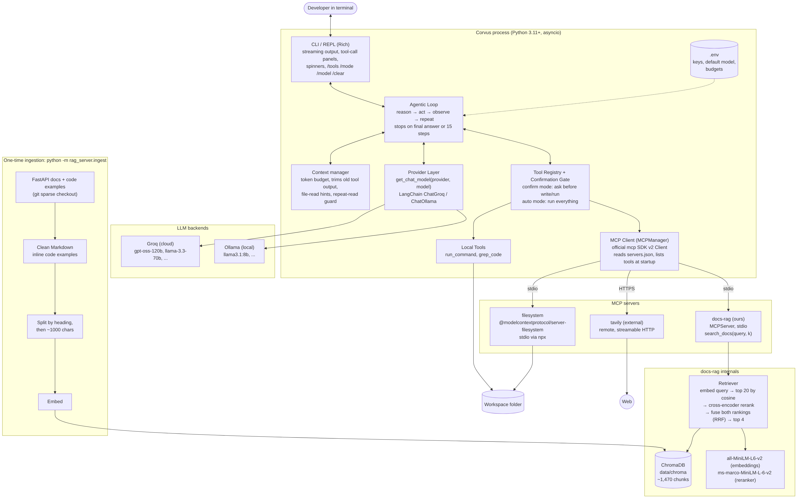
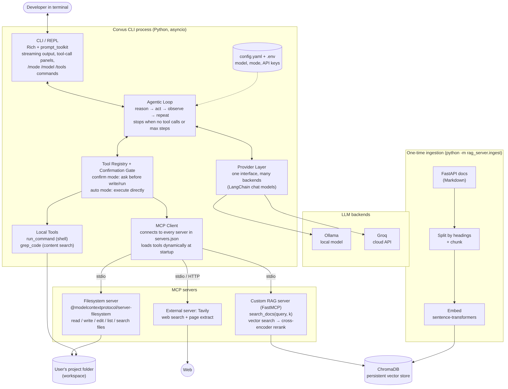
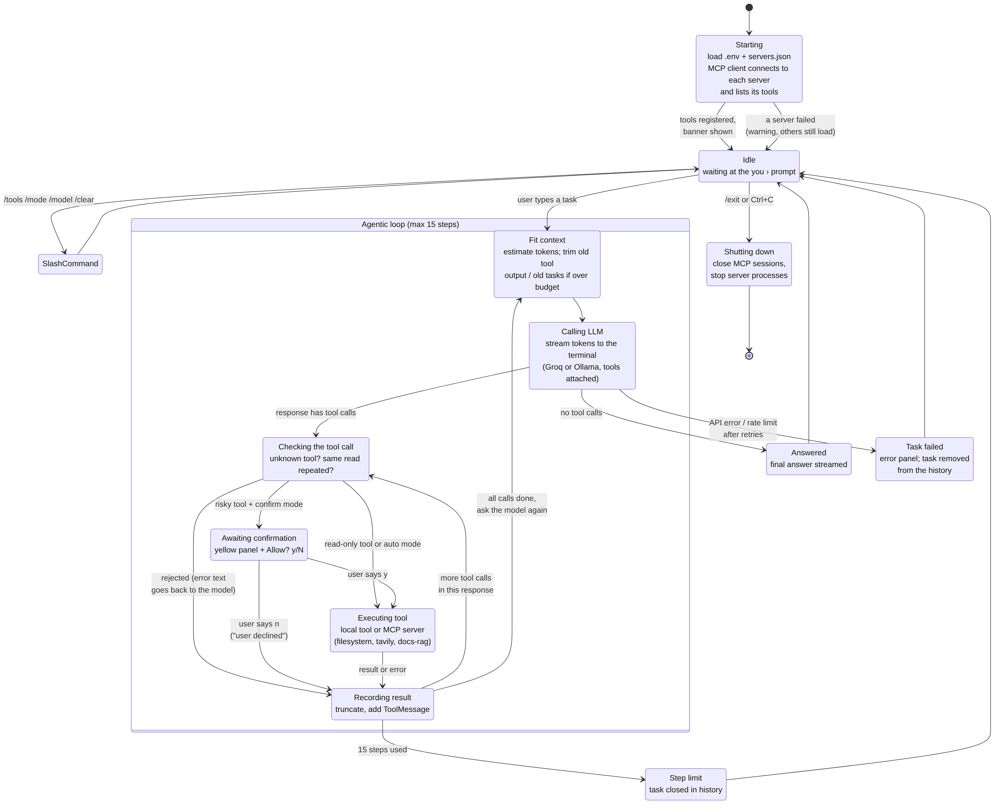
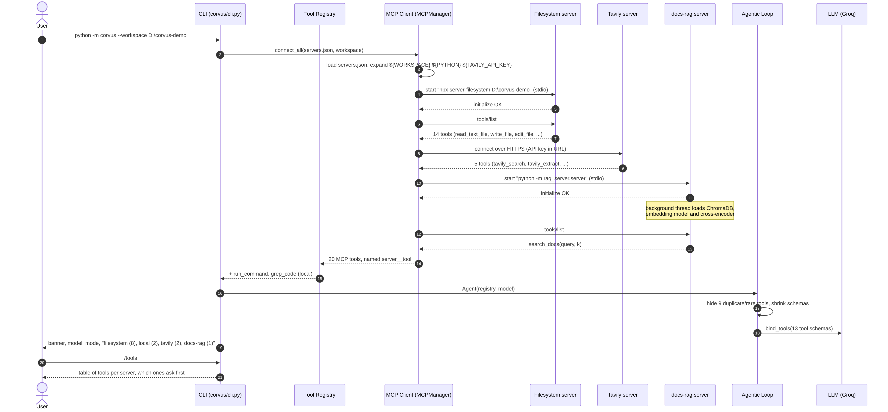
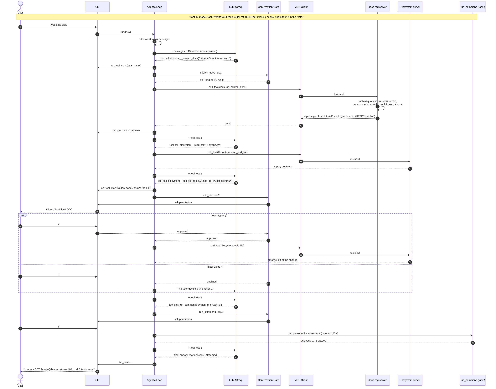
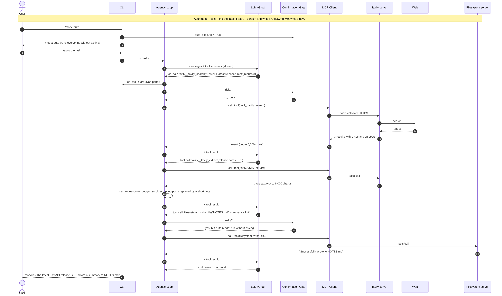

ITCS 5010 · Group Project 2: CLI Coding Assistant · Group 6
| Soumyanil Ain | Lead · agent loop, provider layer, integration |
| Sogol Maghzian | MCP client, tool registry, confirmation gate, local tools |
| Meghana Thummalapally | Custom RAG server |
| Sumiran Juthuga | CLI and diagrams |
Repository: github.com/soumyanilain/corvus-cli
October 15, 2026
Corvus is a command-line coding agent. You give it a task in plain English, for example "make GET /books/{id} return 404 for missing books, add a test and run the tests", and it works on its own. It decides which tools it needs, reads and edits files, searches the FastAPI documentation or the web, runs commands, looks at the results, and keeps going until the task is done. The name comes from Corvus, the crow genus: crows are among the few animals that make and use tools.
/model switches at runtime.servers.json: the official filesystem server, Tavily web search, and docs-rag, our own server that searches the FastAPI docs with cross-encoder reranking./mode auto lets it run without asking.you › Search the FastAPI docs for how to return a 404 error
╭─ ⚙ search_docs via docs-rag ───╮
│ { │
│ "k": 4, │
│ "query": "return a 404 error" │
│ } │
╰─────────────────────────────────╯
✓ Top 4 FastAPI documentation passages for: return a 404 error
(vector search over 20 candidates, ranked by fusion)
[1] Response Status Code > About HTTP status codes (relevance 3.68)
Source: https://fastapi.tiangolo.com/tutorial/response-status-code/
… (66 more lines)
corvus › Here's what the FastAPI docs say about returning a 404 Not Found response:
1. Use HTTPException
raise HTTPException(status_code=404, detail="Item not found")
…
Where to find it in the docs: Handling Errors – https://fastapi.tiangolo.com/tutorial/handling-errors/
A real session on our Windows test machine (abridged). Every tool call gets a panel naming the tool and the MCP server it came from.

We wrote the loop ourselves (corvus/agent.py) instead of using a prebuilt agent, because we needed to stream text, show every tool call, pause mid-step for the user's approval, and manage the context window ourselves. Each step sends the conversation plus the tool schemas to the model. If the reply contains tool calls, each one is checked, approved if needed, executed, and its result is appended as a tool message; then the model is called again. A reply with no tool calls is the final answer. The loop never prints anything itself. It reports events (on_token, on_tool_start, on_tool_end, on_error) to the CLI, which keeps the loop testable and the UI replaceable.
Failures are information, not crashes. A failed or unknown tool call, a bad regex, a path outside the workspace or a declined action all come back to the model as a short error message, so it can try something else. Errors from the model provider are handled in the loop too. The ones we met in testing are recovered automatically: a tool call the provider rejects (invalid JSON, or not matching the schema) is asked for again, null values for optional parameters are dropped, an output-tokens-per-minute limit caps the reply length and waits, a request that is too large shrinks the context budget, and a tool call from a reply the provider marks as cut off is not run. Section 3 shows where these came from. Each recovery appears as a short yellow note. If the call still fails, the task is removed from the history so the next question isn't answered as if it were the old one.
get_chat_model(provider, model) returns a LangChain chat model for groq or ollama. The loop only uses bind_tools() and astream(), so it never knows which backend it is talking to; adding OpenAI or Anthropic would be one more branch. Groq's client retries automatically on rate limits. For Ollama we raise the context window to 16k tokens, because the default is too small for the tool definitions alone.
The MCP client (mcp_tools/manager.py) is built on the official MCP Python SDK v2. At startup it reads servers.json, expands ${WORKSPACE}, ${PYTHON} and environment variables, starts or connects to every enabled server, and pages through tools/list. Tools are registered as server__tool so names can't collide. Nothing is hard-coded: adding a server is a config change. If one server fails to start, Corvus warns and continues with the others.
| Server | Transport | Tools given to the model |
|---|---|---|
| filesystem (official) | stdio via npx, sandboxed to the workspace | read_text_file, write_file, edit_file, list_directory, directory_tree, search_files, create_directory, move_file |
| tavily (external) | streamable HTTP | tavily_search, tavily_extract |
| docs-rag (ours) | stdio, ${PYTHON} -m rag_server.server | search_docs(query, k) |
The three servers offer 20 tools. We hide 9 duplicate or rarely useful ones, so with the two local tools (run_command, grep_code) the model sees 13. Every tool definition is re-sent on every request, so this matters (Section 2.6).
The tool registry gives the loop one execute() for MCP tools and local tools. The confirmation gate marks tools whose names indicate a change (write, edit, move, create_directory, run_command, ...) as risky. In confirm mode their panel is yellow and the user must type y; a refusal goes back to the model as "the user declined this action". run_command has a timeout that kills the whole process tree (a code-review fix: killing only the shell left child processes holding the output pipe, so a dev server would hang Corvus forever). The CLI uses Rich: a branded banner, streamed answers, a panel per tool call with the server it came from, a short preview of each result, spinners, and the commands /tools, /mode, /model, /clear, /exit.
docs-rag answers questions from the official FastAPI documentation. FastAPI fits a coding assistant well: the docs are clean Markdown with many code examples, and they are exactly what you want when writing an API.
python -m rag_server.ingest sparse-clones the docs and code examples, loads 119 pages (skipping the 700 KB changelog and API stubs), inlines the code examples the docs pull in with {* ../../docs_src/... *}, splits by heading and then into ~1,000-character chunks with 150 overlap, prefixes each chunk with "Page > Section", embeds them with all-MiniLM-L6-v2, and stores about 1,470 chunks in a persistent ChromaDB collection. Later sessions reuse it.Groq's free tier rejects any single request over 8,000 tokens and limits tokens per minute and per day. Every request carries the full conversation and all tool definitions, and in our first real runs we hit all three limits: a 413 "request too large" on the second task, and a model that re-read the same file with ever bigger head values until the step limit, using most of a day's allowance. The loop now estimates each request's size and keeps it under a budget (6,000 tokens for Groq) by replacing old tool outputs with a short note and, if needed, dropping earlier tasks. Tool output is capped (12,000 characters for file reads, 6,000 otherwise). When a file is cut, the note says exactly how to read the rest ("call read_text_file with tail=119"). Repeated identical reads are refused. The step limit is 15. If a request is still rejected as too large, the budget is lowered by a quarter and the history trimmed again before retrying.
| Decision | Why |
|---|---|
| Hand-written loop, events to the UI | Control over streaming, confirmation and context; loop and UI are tested separately |
| Official MCP SDK v2 instead of an adapter library | Fewer dependencies; we control naming, paging and error handling |
| Groq as the cloud provider | Free tier, fast, good tool calling; Ollama for fully local use |
| Reranking as the advanced RAG technique, with rank fusion | Targets the main weakness of embedding search on docs (similar wording, wrong page) and is easy to measure on/off; fusion came out of that measurement |
| Confirm mode by default | The agent can overwrite files and run commands; auto mode is one command away |
| Errors returned to the model, never raised | The agent can recover by itself instead of the session crashing |
| Code review before every merge | Testing PR #1 found five bugs (startup crash, one failing server stopping all, timeouts not killing children, errors raised instead of returned, grep on one file) before we built on top of it |
We gave three models on Groq the same coding task, the same 13 tools and the same limits (15 steps, 6,000-token context budget), with no human in the loop. The models were OpenAI's open-weight gpt-oss-120b and gpt-oss-20b, and Alibaba's Qwen3.8 27B. python -m eval.llm_compare copies eval/sample_project (a small FastAPI "Bookshelf" API with a bug) to a fresh folder for each model and runs Corvus in auto mode on this task:
python -m pytest -q and fix anything that fails.When the agent stops, we run the tests it wrote, then 5 hidden grading tests (eval/grading/test_grading.py) that are copied in only afterwards, so no model sees them: POST returns 201 with an id and actually stores the book, a year of 3000 and an empty title are rejected with 422, a missing id returns 404, and the old endpoints still work. Every model call and tool call is logged in eval/results/runs/.
| gpt-oss-120b | gpt-oss-20b | Qwen3.8 27B | |
|---|---|---|---|
| Hidden grading tests passed | 5/5 | 1/5 | 5/5 |
| Agent's own tests | 4 written, 4 pass | none added (the 2 original tests pass) | test file left incomplete; pytest can't load it |
| Ran the tests itself | yes | no | no |
| Used the docs search (docs-rag) | no | no | yes, 3 searches |
| Tool calls (failed) | 10 (0) | 3 (0) | 13 (1) |
| Model calls | 11 | 7 | 13 |
| Time | 245 s | 63 s | 536 s |
| Tokens in / out | 41,643 / 2,465 | n/a* | n/a* (round 2: 91,871 / 2,459) |
| Automatic recoveries | 0 | 3 retries of an invalid tool call, all failed | 1 (output-token limit) |
| How the run ended | final summary | invalid tool-call JSON at its first edit | daily token limit reached |
Final run of each model (eval/results/llm_compare.md). One run per model, so these are observations, not statistics. *Usage figures are lost when a task ends with an error, because the task is removed from the conversation.
gpt-oss-120b solved the task in one clean pass. It listed the folder, read both files, added a BookCreate model with Field(min_length=1) and a year range, a POST endpoint with status_code=201 and an HTTPException(404) for missing ids, read each file back and rewrote it in full to tidy it, ran pytest once (4 passed) and ended with a short, accurate summary. It never used the docs search, even though the task asked for it.
gpt-oss-20b never got past reading the two files, in three runs. In the first, it filled the optional head and tail parameters with null, and Groq's schema validation rejected the call before Corvus saw it. After we made optional parameters accept null, the next two runs failed at its first edit: Groq could not parse the tool call's arguments as JSON (the arguments carry code full of quotes and newlines), and three retries gave the same error. Its 1/5 is the untouched app passing "existing endpoints still work".
Qwen3.8 27B was the most careful and the least lucky. It read both files, searched the docs (three times in the final run: request body with Field validation; HTTPException 404; a POST returning 201), and then fixed app.py correctly in a single edit, scoring 5/5 in all three runs. Its free-tier limit of 1,000 output tokens per minute meant waiting about a minute between replies, so it was the slowest. The tests were its problem. In round 1 its six tests were complete and passed, but it hit the output limit before running them, which Corvus couldn't handle yet. In rounds 2 and 3, after Corvus capped its replies at 1,000 tokens, its writes to test_app.py arrived cut off mid-line (ending in assert r and assert "). It then wrote the same incomplete file again and again: six times in round 2 until the step limit, three times in round 3 until its daily allowance of 200,000 tokens ran out. The provider reported these replies as complete, so the check we added for cut-off replies didn't fire. We could not confirm whether the cap or the provider's tool-call parsing shortened them.
Three rounds. We ran the comparison three times on Oct 14–15, fixing Corvus between rounds (Section 2.1); gpt-oss-120b ran once, in round 1, and needed no changes. Each round got further and exposed a new problem: round 1 found the null arguments and the output limit, round 2 found that capping replies cut file writes short, and round 3 confirmed that the remaining failures were outside what retrying can fix.
null for optional parameters, capping the reply length and waiting when an output limit is hit, shrinking the context after a "request too large", and not running a tool call from a reply marked as cut off. Each was tested with a scripted model before the next round.The advanced technique is reranking (NirDiamant RAG_Techniques #17). Vector search pulls the 20 chunks whose embeddings are closest to the question; a cross-encoder (ms-marco-MiniLM-L-6-v2) then reads the question and each chunk together and scores how well the chunk answers it. Our final version combines the vector ranking and the cross-encoder ranking with Reciprocal Rank Fusion, 1/(60 + vector rank) + 1/(60 + rerank rank), and returns the top 4. Below is how we got there.
We wrote 25 questions from the FastAPI docs, each labelled with the page(s) that answer it (eval/rag_questions.json). Many are phrased the way a developer would ask rather than in the docs' own words, for example "My React frontend on another port gets blocked by the browser" for the CORS page. python -m eval.rag_eval runs every question through the same index and the same 20 candidates with three ordering methods and records Hit@1 (first result is from a correct page), Hit@4 (a correct page is in the 4 results the agent receives), MRR (1 / rank of the first correct result) and latency on a laptop CPU.
| Method | Hit@1 | Hit@4 | MRR | Time per search |
|---|---|---|---|---|
| Vector search only (baseline) | 76% | 92% | 0.830 | 18 ms |
| + Cross-encoder reranking | 80% | 88% | 0.830 | 835 ms |
| + Reranking with rank fusion (final) | 80% | 92% | 0.850 | 882 ms |
A correct page was among the 20 candidates for 24 of 25 questions (Recall@20 = 96%). With 25 questions, one question is 4 percentage points, so these differences are small and should be read as a direction, not a precise effect size.
The reranker is good at meaning, but it over-trusts matching words. On "How do I make sure an integer in the URL path is greater than zero?" vector search missed the right page completely (it returned the general path- and query-parameter pages); the cross-encoder put path-params-numeric-validations.md at #1. It also fixed the order for two more questions. But it lost three that vector search had right, each time by following a literal word: "receive JSON and validate it with Pydantic" went to an advanced page about JSON and Base64 instead of the request-body tutorial; "serve CSS and image files" went to the templates page instead of static files; "respond with status 201" went to the advanced status-code pages, pushing the tutorial page to #4. The model was trained on web search (MS MARCO), where repeating the query's words is a strong signal. In documentation, advanced pages often repeat a term more than the beginner page that actually answers the question. Net effect of reranking alone: +4 points Hit@1, −4 points Hit@4, MRR unchanged.
Fusing the two rankings kept most of the gains and removed most of the damage. A chunk only stays at the top if both methods rank it well, so the reranker can't overrule vector search on a single word match. Static files went back to #1, status 201 to #2, and the HTML-form question improved to #1. Fusion is best on all three metrics. It isn't free of trade-offs: the numeric-validation page, where vector search was weak, drops from #1 to #4 (still inside the 4 results the agent sees), the Docker question slips from #1 to #2, and the JSON question stays lost because both methods rank the JSON/Base64 page highly.
Data preparation mattered more than the reranker. The baseline was already at 76% / 92%. We think that comes mostly from ingestion: inlining the code examples the docs keep in separate files, prefixing every chunk with "Page > Section", splitting at headings, and skipping noise. For comparison, splitting the raw docs folder into fixed-size pieces without cleaning would have produced 1,798 chunks, 826 of them (46%) from the changelog, and 370 with include markers where the code should be.
Reordering can't fix what retrieval didn't fetch. "How do I reuse the same pagination parameters across many endpoints?" failed with every method: the dependencies page never uses the word "pagination", so it wasn't among the 20 candidates. Query rewriting (HyDE or query transformations) or hybrid keyword + vector search would be the next technique to try for this kind of vocabulary mismatch.
Cost. Reranking 20 pairs on a CPU makes a search about 50× slower (18 ms → 0.9 s). Inside the agent this is small compared with an LLM call (several seconds per step), so we kept it, and the server loads both models in a background thread at startup so the first search isn't slower still.
servers.json and no change to the agent. The same is true for removing a server, or for one that fails to start: Corvus just loads the others.print() calls that would have corrupted the stdio connection.head values. A message that says exactly what to call next (tail=119) fixed it. Feedback written for the model needs the same care as a prompt.gpt-oss-20b explained "MCP" as "Machine-Code-Processor" while correctly describing the code around it.npx, line endings, an editor saving old copies over new files, a brand-new Python 3.14) also cost time.execute_query would run without asking. MCP servers can mark tools with readOnlyHint (the filesystem server and ours do); the gate should use that, default to asking for unknown tools, and add "always allow this tool" and a diff preview before edits.The diagram below was committed on Oct 1, before any code (tag planning-v1). Figure 1 shows the final system. The main differences and the reasons for them:

| Area | Planned (v1) | Built (v2) | Why |
|---|---|---|---|
| MCP client | langchain-mcp-adapters | Official MCP SDK v2 Client in our MCPManager | Fewer dependencies, direct control of tool names and errors |
| Tavily | Local npx process (stdio) | Hosted endpoint over HTTP | One less local process to manage on Windows |
| Config / CLI | config.yaml + .env; Rich + prompt_toolkit | .env only; Rich only | Simpler; nothing needed the extra pieces |
| Context management | "Truncate tool output" | Token budget, trimming, file-read hints, read guard, rollback, recovery from provider errors | Groq free-tier limits and a looping model in real runs; schema and output-limit errors in the LLM comparison |
| Tools shown | All | 13 of 22, shorter descriptions | Tool definitions are re-sent on every request |
| Step limit | 25 | 15 | A loop used most of a day's token allowance |
| Confirmation | Read-only/mutating tags; "always allow" | Keyword match on tool names; y/N | Simpler; covers every tool we load (see Section 5) |
| RAG server | FastMCP; heading + 800-char chunks; top 5 | MCPServer; code-aware splitter, inlined code, 1,000-char chunks; top 4 of 20 by rerank + rank fusion | SDK v2 rename; LangChain's splitter broke indentation; result size must fit the budget; fusion beat plain reranking in our evaluation |
| servers.json | Fixed commands | ${PYTHON}, ${PROJECT_ROOT}, cwd, env vars | The RAG server must run with the venv's Python from the project folder |
| Evaluation | A question list | Scripts for RAG metrics and an LLM comparison with hidden grading tests | Repeatable numbers for this report |



